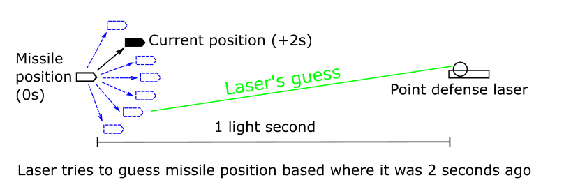

Missile vs. Laser: The Game of Terminal Maneuvers
01-07-2025 9:42PM (ET) 01-07-2025 9:42PM (ET) (edited)

Missile vs. Laser: The Game of Terminal Maneuvers
What is the best strategy to hit a maneuvering missile with a point defense laser when the missile is traveling through space at ~1 percent the speed of light?
A few years ago I was trying to work out at what range a point defense laser on a spaceship could destroy a missile traveling toward that spaceship at ~1% the speed of light. As I did the math on beam waist, divergence, focal point and power it became clear that the limiting factor on effective range wasn't any of these factors. At 1 light second, the laser only learns where the missile a second ago and the laser itself takes an additional second to reach the missile. This creates a 2 second latency. The missile can burn maneuvering fuel to make random but minor course changes to make its future position uncertain to the laser. We assume the missile has acquired most of its velocity already and the maneuvers it does to increase positional uncertainty do not allow it to reach the laser faster. Thus the laser could hit the missile, if only it knew where the missile was going to be.

At first I assumed this would be a simple calculation. Determine the sphere of possible locations the missile could be based on the maximum power of the thrusters on the missile. As the missile gets closer, the latency decreases, which causes this sphere of possible locations to shrink. Given the size of sphere over time, we can determine the total probability the laser hits the missile before the missile gets close enough to detonate1 and destroy the ship the laser is on.
However the power of the thrusters on the missile depends on how much maneuvering fuel they burn and the amount of fuel on the missile is finite. This produces the following effect:
- The missile wants to make its future position uncertain by burning fuel.
- If the missile is far away from the laser, burning small amounts of fuel can make the position of missile very uncertain to the laser.
- When the missile gets closer to the laser, the latency to the laser decreases, so it cost the missile more fuel to maintain that same level of uncertainty position.
These rules suggests a strategy where the missile conserves fuel when it is far away and then burns increasing more fuel as it gets closer. This approach is still missing a critical aspect, if the missile burns fuel in a predictable manner and the laser knows this, the laser has to search a smaller area. That is, the missile should bluff.
LANCEY:
Gets down to what it's all about, doesn't it?
Making the wrong play at the right time.
THE KID:
You were crazy -- odds are three hundred to one against.
LANCEY:
(after a moment)
I don't play a percentage game. I play stud poker my way.
And I got the money and you got the questions.
In an attempt to explore the strategy of this missile vs laser dynamic I designed a game called terminal maneuvers. It contains all the elements of this problem but in the most stripped down manner possible.
You can play terminal maneuvers against a computer. The code is available on github.com/ethanheilman/terminal-maneuvers.
How to play Terminal Maneuvers
In this game there are two players, a missile and a laser. The game consists of five rounds. The laser's goal is to hit the missile with laser before the end of round five. The missile's goal is to survive to end of round five.
At the beginning of each round the missile secretly chooses how much fuel to burn to maneuver. Then the laser attempts to guess this number. We assume the laser always knows how much starting fuel the missile has and after the end of each round, the laser learns how much fuel the missile burnt on that round.
If the laser guesses incorrectly. The missile is safe for that round and we go to the next round.
If the laser guesses correctly, there is a hit probability table based on the amount of fuel the missile burned and the round. Burning more fuel produces a larger potential area that missile could be in and thus it is less likely the laser hits the missile. On the other hand as the missile gets closer to the laser, the lasers information about the missile is more recent and thus, the hit probability goes up.
| Fuel burned | Round-1 | Round-2 | Round-3 | Round-4 | Round-5 | | --- | --- | --- | --- | --- | --- | | 0 Fuel | 1 | 1 | 1 | 1 | 1 | | 1 Fuel | 1/6 | 2/6 | 3/6 | 4/6 | 5/6 | | 2 Fuel | 0 | 1/6 | 2/6 | 3/6 | 4/6 | | 3 Fuel | 0 | 0 | 1/6 | 2/6 | 3/6 | | 4 Fuel | 0 | 0 | 0 | 1/6 | 2/6 | | 5 Fuel | 0 | 0 | 0 | 0 | 1/6 | | 6 Fuel | 0 | 0 | 0 | 0 | 0 |
The values for each pair (round, fuel burned) are the probability the laser will hit the missile, if the laser guesses the fuel spent correctly. We use x/6 so the game can be played with a d6 (six sided dice). If in round 1, the laser guesses 1 fuel, then roll a d6 to determine if the laser hits the missile. The value 1 represents that if the laser guesses correctly, the laser always hits. The value 0 represents that even if the laser guesses correctly it will always miss.
How much starting fuel does the missile need?
If the missile has 20 or more fuel, it will always win since it can always spend enough fuel in each round to be completely safe, e.g. spending 2 fuel on round one, 3 fuel on round two, ... 6 fuel on round 5.
If the missile has 4 or less fuel, it will always lose. The laser's strategy should be to guess 0 fuel in each round. Thus, if the missile in any round burns 0 fuel, it will be hit. This means to win the missile must burn at least 1 fuel per round. Since there are 5 rounds, the missile will have 0 fuel remaining in round 5 and so must burn 0 fuel. The laser knows the missile must burn 0 fuel, because that is the only option left. This means the missile is always hit.
So given a fuel value between 5 and 19, the missile and laser both have a chance of winning. The missiles chance of winning increases as the starting fuel goes up.
Generally I play the game where the missile has 7 fuel. So far in my experiments the laser wins ~75% of the time.
Final thoughts
I've been playing around with this game off and on for a few years, with slightly different rules. To my shame, I haven't actually done the work to see if there is a Nash equilibrium between the missile and laser strategies. Some day I might do that or write an implementation of a continuous and higher fidelity version of Terminal Maneuvers.
Appendix
Terminal Maneuvers (table top version)

The game requires
- 7 pennies representing the missile’s fuel,
- A d6 die,
- 7 cards,
- The game board
Game Board

Cards
- Guess Missile burns 0 Fuel
- Guess Missile burns 1 Fuel
- Guess Missile burns 2 Fuel
- Guess Missile burns 3 Fuel
- Guess Missile burns 4 Fuel
- Guess Missile burns 5 Fuel
- Guess Missile burns 6 Fuel
To substitute playing cards, choose seven playing cards, assign each one of the seven a number from 0 to 6. King=0, Ace=1, 2=2, 3=3,...
Rules
The game takes place on the board provided below. The laser always has a hand of 7 cards. The missile starts with 6 fuel.
Each round
- The laser starts the round by playing one of its seven cards face down. This is the laser's guess of how much fuel the missile will burn.
- Then, the missile chooses how much fuel it will burn in that round and reduces its remaining fuel by that amount.
- Once the missile has decided how much fuel it wants to spend, the laser flips over the card it played face down. If the laser guesses correctly, the missile is caught. Then roll a d6, if appropriate to determine if the missile loses the game.
- If roll determines that the missile is not safe, the missile loses the game.
- The laser then returns the played card to their hand and the next round starts.
- If Round 5 has ended and the missile has not lost the game, the missile wins and the laser loses.
Additional notes
- The missile can not have negative fuel. If the missile has 0 fuel it no longer has any options and must pay 0 fuel in all future rounds.
- The laser always has all seven cards in their hand.
- When we say”roll a d6 on a 4+ missile is safe, we need on a roll of 4, 5, or 6, the missile is safe” and all other outcomes the missile loses the game.
- It is pointless for the laser to ever guess squares in which the missile is always safe as guessing correctly, i.e. catching the missile, has no effect.
-
An implicit assumption I am making here is that missile can destroy the ship with the point defense laser while still being very far away from the ship. This is because if the missile needed to get as close as say 1 km away, the missile wouldn't stand a chance. Light travels 3 km in 10 microseconds, so the point defense laser would be using targeting information that is only 20 microseconds old. If the missile's warhead is say a nuclear pumped x-ray laser, or nuclear shaped charges then the missile can detonate at extreme ranges (1000 km). Thus, the range at which the missile warhead if can destroy the less maneuverable ship would be greater than the range at which the laser can reliably always hit the missile. ↩